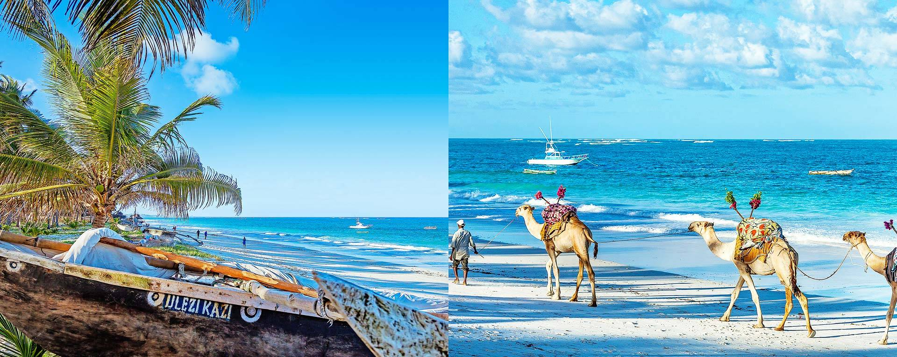
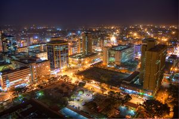

mombasa island in the Indian Ocean and partly on the mainland (with which it is connected by a causeway). It is Kenya's chief port and an important commercial and industrial center. Manufactures include processed food, cement, and glass. Oil is refined and tourism is also important
Nairobi has a population of three million plus. Situated on the Nairobi River, the city is not only the largest and fastest growing city in Kenya, but one of the largest in Africa.The city of Nairobi also grew due to administration and tourism businesse
